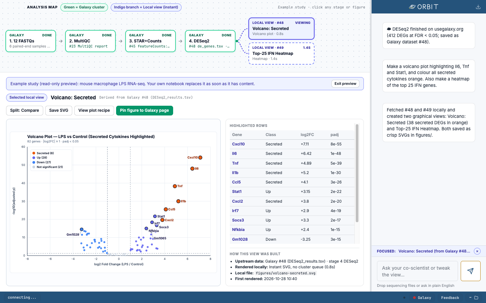
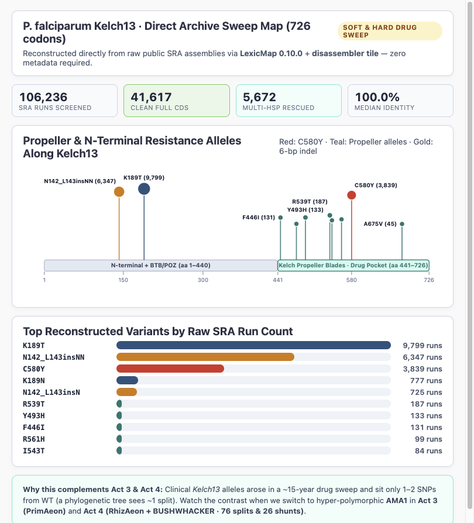
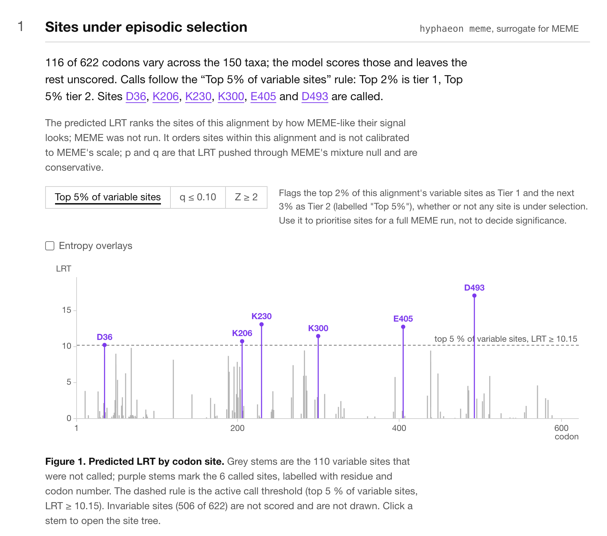
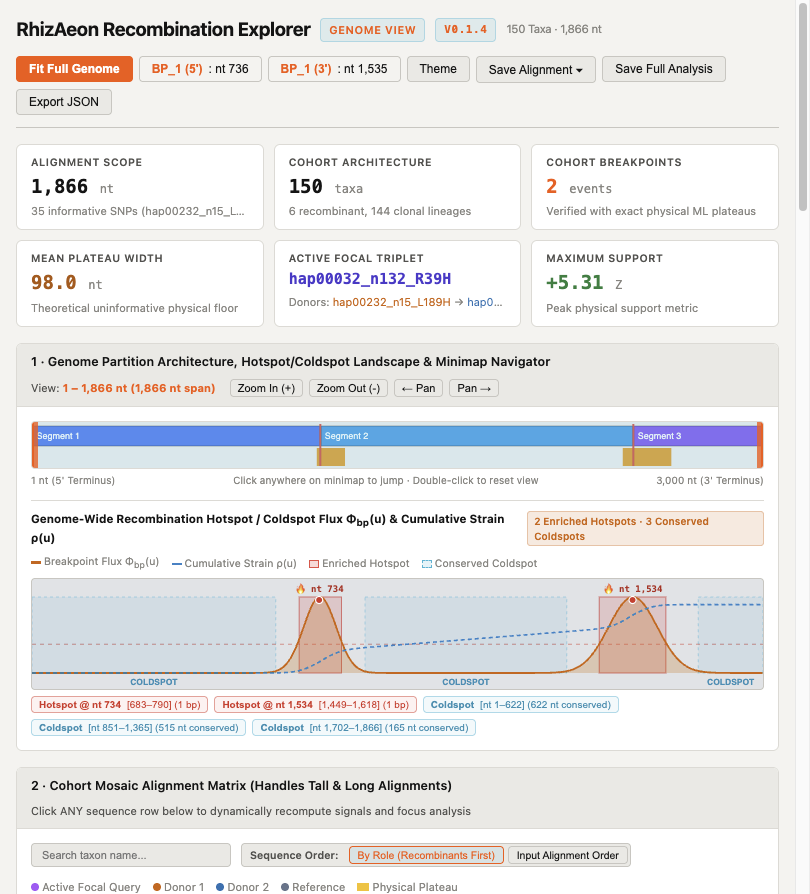
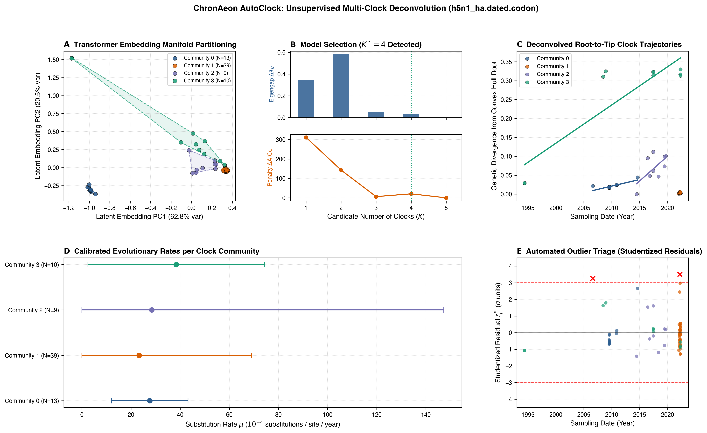
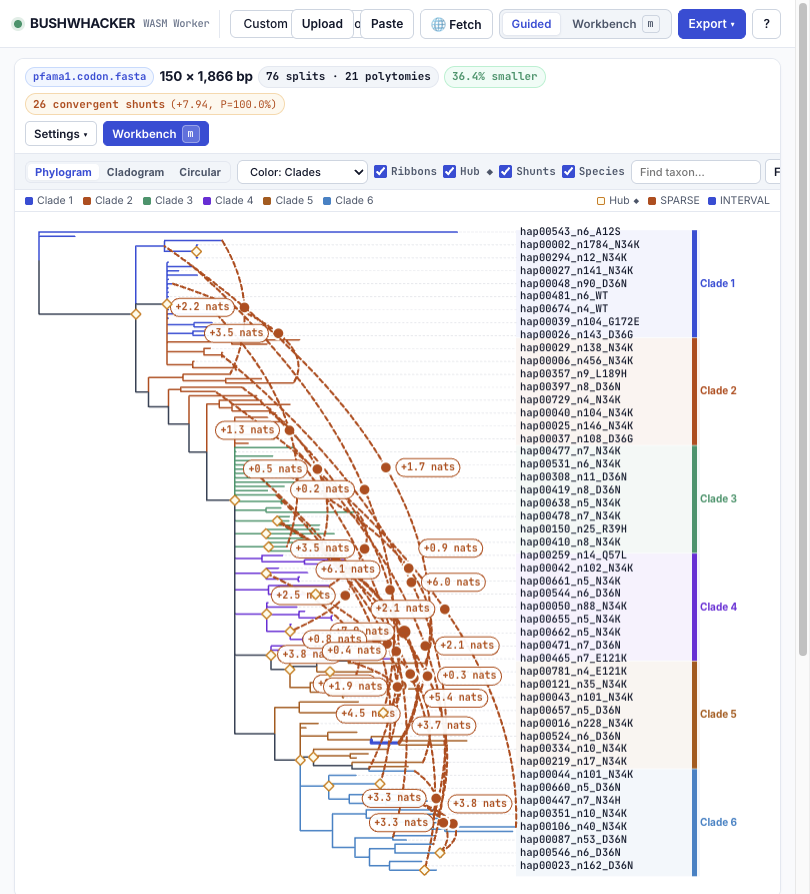

New Technologies in BRC:
Querying Entire SRA, Agentic Analysis,
Revolutionary New Tooling
Talk Roadmap
- BRC + Galaxy MCP: Any AI harness via galaxyproject.org/agents.
- Orbit Desktop: Auditable cloud stages + instant local figures.
- Custom UDTs: Run any container via udt-signup.
- Adaptive Loops: Entire cohorts reanalyzed in hours.
- Uniform Multi-Omics: RNA-seq, ChIP, ATAC-seq & variants.
- Clade Alignments: Project variants & trace gene evolution.
Agentic access & custom UDTs connect live archive interrogation with uniform BRC 3.0 baselines — removing download, install, and pipeline bottlenecks for pathogen biologists.
Agentic BRC & Galaxy
Agentic BRC & Galaxy: Any Harness via MCP
BRC Analytics (brc-analytics.org/api/v1/mcp) and Galaxy (uvx galaxy-mcp, 48 tools) speak standard MCP — discover curated genomes and run real cloud jobs together.
Plug in Orbit, Claude Code, Codex CLI, Antigravity, Claude Desktop, or Pi / Cursor — every tool, workflow, and container executes as a tracked Galaxy job.


Orbit: The Biologist's Agentic Workbench

Standalone desktop app shipping galaxy-mcp and galaxy-skills out of the box — connect your API key and collaborate in plain English.
Green stages execute reproducibly on Galaxy clusters; indigo branches generate crisp interactive SVGs locally and pin figures straight to Galaxy pages.

Unlock Custom Tools: User-Defined Tools Signup
When no installed tool fits — like our new disassembler, RhizAeon, or logan-walker wrappers — you or your AI agent define a short YAML + container and run it directly in your history.
Sign in with your ORCID iD, link your usegalaxy.org account, and share a sentence on what you plan to build. Standard tools work immediately while your request is approved.
Logan & the Tool Suite
What Is Logan? Unitigs vs. Contigs
Logan (led by Rayan Chikhi & Artem Babaian) assembles the entire public Sequence Read Archive so anyone can query raw reads by sequence content — live on usegalaxy.org and logan-search.org.
Logan Cadence & Live Scale
Assembling tens of millions of raw SRA sequencing runs requires immense archive-wide compute — so Logan updates in periodic (~annual) full rebuilds rather than daily increments.
Active right now on usegalaxy.org and logan-search.org — covering 99.5% of the public SRA by size across clinical, environmental, and metagenomic archives.
The next full archive assembly is currently being built to incorporate newer sequencing runs and keep global pathogen surveillance current.
Searching by sequence ignores broken submitter labels — uncovering thousands of malaria, viral, and bacterial runs hidden inside mislabeled host or metagenomic datasets.
Two Index & Search Modes: kmindex vs. LexicMap
45,879 AMA1 runs (drops to 0.74 in variable loops)
89.4% median identity across H5N1 HA strains
When immune evasion or rapid viral drift breaks exact 31-mers, LexicMap on contigs recovers divergent hits that kmindex alone misses — while kmindex screens unitig diversity in minutes.
From Raw Archive Hits to Deep Cohorts
Finding tens of thousands of matching sequencing runs is only step one. To answer real biological questions, we must turn noisy hit lists into clean, in-frame codon alignments:
Raw archive contigs arrive fragmented, reversed, frameshifted, or split across multiple hits. Evolutionary tools require stop-free, codon-aligned cohorts — the exact bridge built by disassembler.
disassembler: Reconstructing Clean Cohorts
- logan-walker (kmindex route): Streams a hit run's unitig graph directly from public storage and walks paths to recover full coding haplotypes.
- tile (LexicMap route): Stitches fragmented contig alignments, rescues broken multi-hit genes, and builds stop-free codon cohorts (prep_cohort).


HyphAeon & PrimAeon: Spotting Rapid Adaptation
Once disassembler builds a clean codon cohort, biologists want to know how natural selection is shaping the protein — without waiting hours for massive phylogenetic tree searches:
PrimAeon runs rapid site screening right inside your browser tab (primaeon.org, data never leaves your laptop); HyphAeon scales deep selection, epistasis, and mutational scans on usegalaxy.org.
PrimAeon & HyphAeon in Action: P. falciparum AMA1

Across 150 haplotypes × 622 codons, 6 purple peaks (D36, K206, K230, K300, E405, D493) rise above the dashed call threshold (gene-wide pACAT = 0.001).
The other 110 variable codons stay below threshold while 506 invariant codons are omitted — isolating likely immune-escape hotspots at a glance.
Toggle cutoffs (Top 5%, q ≤ 0.10, Z ≥ 2), overlay sequence entropy, or click any purple stem in the browser to inspect its site-level tree.
Running full HyphAeon on the same AMA1 cohort uncovers 26 selected sites and 110 co-selected epistasis pairs led by 283–300 and 200–405.
RhizAeon: Spotting Swapped Gene Segments
Did parts of this gene get swapped in from another strain?
Pinpoints exact swap boundaries, separates recombination hotspots from conserved coldspots, and partitions the alignment before downstream tree or selection modeling.
RhizAeon in Action: AMA1 Intragenic Recombination

Detects 2 verified cohort breakpoints (6 mosaic recombinants + 144 clonal lineages) with strong statistical confidence (+5.31 Z peak support).
Partitions AMA1 into Segments 1, 2, and 3 — separating the hyper-variable Domain I epitope loop, the Domain II–III core, and the conserved C-terminal tail.
Orange flux peaks mark hotspots at nt 734 (aa 245, inside Domain I past c1L) and nt 1,534 (aa 511, inside Domain III) — recovering classic PfAMA1 intragenic mosaicism.
Clicking any taxon row below highlights which parental lineages contributed each recombined haplotype block.
ChronAeon: Clocks, Speed Shifts & Bad Dates
When samples come with collection years, ChronAeon answers three practical surveillance questions directly from sequence distances — without needing a slow guide tree:
ChronAeon runs in seconds via Python CLI and as a live tool suite on usegalaxy.org — turning raw dated cohorts into clean evolutionary timelines.
ChronAeon in Action: H5N1 Hemagglutinin Clocks

Sequences separate cleanly into 4 evolutionary communities (colors), with automatic model selection locking onto K* = 4 distinct rate regimes.
Each lineage follows its own root-to-tip slope over 1994–2022 around the overall baseline (tMRCA ≈ 1949.3, μ = 0.00362, R² = 0.762).
Red × markers highlight 2 extreme outliers sitting more than 3 standard deviations off their expected clock — isolating misdated or lab records instantly.
BUSHWHACKER: When a Tree Lies — Cross-Clade Jumps
A strict branching tree assumes every gene descends down one neat family branch — but pathogens constantly break that rule.
Clonal drug sweeps look like simple trees with zero shunts; mosaic antigens and horizontally transferred genes immediately light up with cross-clade bridges.
BUSHWHACKER in Action: AMA1 Mosaic Network

Top pill bar summarizes the tree skeleton for 150 × 1,866 bp AMA1: 76 supported branching splits and 21 collapsed clusters (polytomies) across Clades 1–6.
Orange dashed arcs trace 26 convergent evolutionary shunts leaping directly across distant clades — showing exactly where sequence blocks or mutations are shared outside the tree.
Adding those 26 bridges makes the model 36.4% smaller (cleaner explanation of the alignment) with overwhelming support (+7.94 nats, P = 100.0%).
A single-sweep gene like Kelch13 needs 0 shunts; hyper-polymorphic AMA1 immediately reveals its network of domain sharing.
BRC 3.0 Precomputed Data
Adaptive Loops: Entire Datasets Reanalyzed in Hours
(34.7 TB Total Data)
on Just 4 Cloud Nodes
Concordance vs. Full Run
When uniform pipelines can reprocess tens of thousands of genomes overnight, precomputing standardized baselines across entire pathogen clades becomes practical.
Scaling Uniform Precomputation Across BRC Genomes
Legacy databases mix incompatible pipelines from different papers. BRC 3.0 delivers uniformly reprocessed, high-quality baselines across every curated organism — ready to browse or feed straight into Galaxy:
BRC Analytics continues expanding curated genome coverage beyond today's 1,974 organisms and 5,505 assemblies — adding uniform precomputed tracks across priority pathogens and vectors.
Clade-Specific Multiple-Genome Alignments
BRC 3.0 precomputes whole-genome alignments within pathogen and vector clades — connecting well-characterized reference species directly to their evolutionary neighbors:
Unified End-to-End Platform & Resources
Combine uniform precomputed organism baselines with live archive queries and zero-install browser tools — every step recorded on usegalaxy.org and brc-analytics.org.